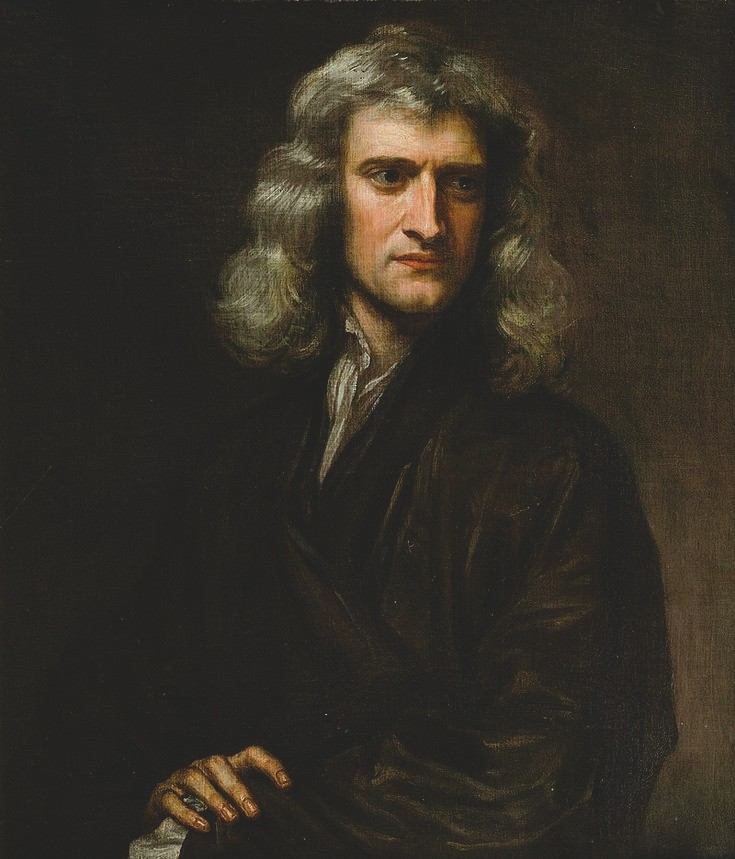

Who Was Isaac Newton?
Isaac Newton was an English natural philosopher, mathematician, physicist, and theologian who lived from 1642 to 1727. He is remembered as one of the most influential figures in the history of science and natural philosophy, the term used in Newton's own period for the systematic philosophical study of the physical world. Through his work on motion, gravitation, mathematics, and optics, Newton helped establish a new framework for understanding nature through precise laws and mathematical reasoning.
Newton is especially associated with his monumental 1687 work, the Philosophiæ Naturalis Principia Mathematica, commonly known as the Principia. In this work, he presented a unified mathematical framework capable of explaining both the motion of falling objects on Earth and the movements of planets through the heavens. The same fundamental laws could therefore be applied to terrestrial and celestial phenomena, fundamentally transforming humanity's conception of the physical universe.
Educated at Cambridge University, Newton developed much of his most important early work during the years in which the university was closed because of plague. During this period of relative isolation, he pursued questions concerning mathematical change, the behavior of light, and the forces governing physical motion. He later returned to Cambridge and built a long intellectual career spanning mathematics, mechanics, astronomy, optics, natural theology, and experimental investigation.
Newton's influence extended beyond the university and the laboratory. He became President of the Royal Society and later held important positions at the Royal Mint, where he participated actively in the administration and reform of England's currency. His public career demonstrates that Newton was not simply an isolated theoretical thinker but also an important institutional figure within the scientific and political world of late seventeenth- and early eighteenth-century England.
Because Newton's own writings engage directly with questions concerning method, causation, God, space, time, and the ultimate intelligibility of nature, historians of philosophy continue to regard him as a significant philosophical figure and not merely as a scientist in the modern sense. Newton lived before the complete institutional separation of science from philosophy, and his work stands at the center of the transformation that eventually produced modern physics and modern philosophy of science.
Isaac Newton: Quick Facts
- Name — Isaac Newton
- Period — 1642–1727
- Born in — Woolsthorpe, Lincolnshire, England
- Died in — London, England
- Field — Natural philosophy, mathematics, and physics
- Known for — The laws of motion, universal gravitation, and the Principia Mathematica
- Major works — Philosophiæ Naturalis Principia Mathematica and Opticks
- Key philosophical themes — Absolute space and time, natural theology, causation, and scientific method
- Famous rival — Gottfried Wilhelm Leibniz, associated with major disputes concerning calculus and the nature of space
- Later role — Warden and Master of the Royal Mint, President of the Royal Society
Newton and the Scientific Revolution

Newton's work represents one of the great culminations of the Scientific Revolution, a long period of transformation in European natural philosophy that challenged many assumptions inherited from ancient and medieval thought. Earlier thinkers had often relied upon Aristotelian explanations of motion, matter, and the structure of the cosmos. From the sixteenth century onward, however, astronomers, mathematicians, and philosophers increasingly developed new mathematical and observational methods for investigating the natural world.
Figures such as Nicolaus Copernicus, Johannes Kepler, and Galileo Galilei played essential roles in this transformation. Copernicus proposed a new arrangement of the planetary system, Kepler developed mathematical laws describing planetary motion, and Galileo investigated falling bodies, inertia, and the mathematical structure of physical motion. Their work undermined the traditional separation between the supposedly different physical regions of Earth and the heavens.
Kepler's mathematical description of planetary orbits and Galileo's investigations of terrestrial motion provided crucial foundations for Newton's later synthesis. Newton demonstrated that the same mathematical principles governing an object falling toward Earth could also help explain the motion of the Moon and the planets. This unification was one of the most revolutionary achievements of the new science because it suggested that nature operated according to universal rather than local principles.
The seventeenth century also witnessed the rise of new philosophical approaches to explanation, including the mechanistic philosophy associated with thinkers such as René Descartes. Descartes imagined nature as a system of matter in motion governed by laws, and his ideas helped shape the intellectual environment inherited by Newton. Newton, however, rejected important elements of Cartesian physics and developed a distinct system based more heavily on mathematical laws and gravitational attraction.
Newton therefore did not create modern science entirely by himself. Rather, his achievement consisted partly in synthesizing discoveries, mathematical techniques, and philosophical problems developed by earlier generations. Yet the extraordinary explanatory power of his system gave classical mechanics an authority that dominated scientific thought for centuries. The success of Newtonian physics also profoundly influenced later philosophers who sought similarly precise laws governing knowledge, society, morality, and human history.
Newton's Early Life and the Plague Years
Newton was born in the small hamlet of Woolsthorpe, Lincolnshire, on 25 December 1642 according to the calendar then used in England, corresponding to 4 January 1643 in the modern Gregorian calendar. He was born into a farming family and entered a childhood marked by complicated family circumstances. Although he did not initially appear destined for an extraordinary intellectual career, his education gradually revealed an unusual interest in mechanical devices, mathematics, and systematic investigation.
Newton eventually entered Trinity College, Cambridge, in 1661, where he encountered the traditional curriculum while also pursuing newer ideas in mathematics and natural philosophy. He studied important works associated with figures such as Descartes and other modern thinkers, developing an intellectual independence that would later become characteristic of his career. Cambridge provided access to mathematical and philosophical traditions that enabled Newton to move beyond conventional academic study.
When a severe outbreak of plague forced Cambridge University to close in 1665, Newton returned to Woolsthorpe. During the following period of isolation, he undertook an extraordinary burst of intellectual work later associated with his annus mirabilis, or "year of wonders." The exact development of his discoveries occurred over time, but these years clearly played a decisive role in forming the ideas that would later become central to his scientific and mathematical achievements.
During this remarkable period, Newton developed foundational ideas connected with the mathematical techniques later known as calculus, carried out important investigations into the nature of light and color, and began thinking deeply about the forces responsible for planetary motion. The famous story of an apple inspiring his theory of gravitation has often been simplified into legend, but Newton himself later recalled that reflections on falling bodies helped stimulate his thinking about universal attraction.
The plague years reveal an important feature of Newton's intellectual development: many of his greatest insights began long before they appeared in finished published form. Newton often worked privately for years, revising his arguments and mathematical demonstrations before presenting them publicly. His later reputation as a revolutionary thinker was therefore built upon a long process of calculation, experimentation, criticism, and refinement rather than upon a series of instantaneous discoveries.
Newton's Career at Cambridge and the Royal Society
Following his return to Cambridge, Newton advanced rapidly within the university's intellectual world. In 1669, at the unusually young age of twenty-six, he was appointed Lucasian Professor of Mathematics, succeeding his former teacher Isaac Barrow. The prestigious position gave Newton the opportunity to lecture and continue his private investigations into mathematics, optics, mechanics, and the broader principles of natural philosophy.
Newton's early reputation grew substantially through his experiments with light and his use of prisms to investigate the composition of white light. His conclusions generated controversy, particularly because Newton's interpretations challenged established assumptions about color and vision. These disputes contributed to his reluctance to publish some of his work, illustrating the intensely competitive intellectual environment in which scientific ideas were increasingly communicated through learned societies and public correspondence.
Newton's landmark work, the Principia Mathematica, was published in 1687 with the encouragement and financial assistance of the astronomer Edmond Halley. Its publication established Newton as the leading natural philosopher of his generation and gradually transformed scientific discussion throughout Europe. The mathematical depth of the work made it difficult for many readers, but its extraordinary explanatory success gave Newtonian mechanics increasing authority during the following century.
Newton eventually moved beyond the purely academic world into major public service. He became Warden of the Royal Mint in 1696 and later Master of the Mint, taking his responsibilities far more seriously than the position had traditionally required. He helped supervise the reform of English currency and participated actively in efforts against counterfeiting, demonstrating an administrative rigor comparable to the precision visible in his scientific investigations.
In 1703, Newton became President of the Royal Society, one of Europe's most important scientific institutions, and he remained in the position for the rest of his life. He was knighted by Queen Anne in 1705, becoming Sir Isaac Newton. By the time of his death in 1727, he had achieved an intellectual and public status almost unprecedented for a natural philosopher, and he was buried in Westminster Abbey as one of Britain's most celebrated figures.
What Did Newton Believe?
Newton's natural philosophy rests on the conviction that the physical universe displays an intelligible order that can be investigated through careful observation, experiment, mathematical reasoning, and the systematic comparison of theoretical principles with natural phenomena. He rejected the idea that explanations should rest entirely upon abstract speculation. For Newton, successful knowledge of nature required principles capable of accounting for measurable and observable effects.
A central feature of Newton's outlook was the belief that mathematical laws could reveal fundamental regularities within the universe. His laws of motion and law of universal gravitation did not merely describe isolated events but attempted to identify general principles applying throughout nature. The extraordinary success of this approach encouraged later philosophers to regard mathematics as one of the most powerful instruments available for discovering the structure of physical reality.
Newton also defended the controversial idea of absolute space and time. He believed that space and time possessed an existence independent of the particular objects and events occurring within them, providing a fixed framework for understanding true motion. This position became central to later philosophical disputes, particularly the debate between Newtonian defenders of absolute space and thinkers such as Leibniz, who defended more relational conceptions.
Newton maintained a profound interest in God and natural theology. He believed that the order, regularity, and mathematical comprehensibility of the universe supported belief in an intelligent divine creator. At the same time, Newton's religious views were highly unconventional in important respects, and his extensive theological writings reveal that he devoted enormous private attention to biblical interpretation, church history, and questions about the nature of God.
Scholars of philosophy of science also continue to examine Newton's methodological statements, including his famous declaration hypotheses non fingo, commonly translated as "I frame no hypotheses." This phrase has often been interpreted as expressing his refusal to invent unsupported explanations for phenomena not yet adequately understood. Newton's actual method was more complex than a simple rejection of theory, but his work became a foundational example of how mathematical reasoning and empirical investigation could be combined.
The Principia Mathematica: Newton's Masterwork
The Philosophiæ Naturalis Principia Mathematica, or "Mathematical Principles of Natural Philosophy," published in 1687, presents Newton's comprehensive system of mechanics and is widely regarded as one of the decisive works in the history of modern science. Within it, Newton established mathematical principles for analyzing motion and demonstrated that these principles could be applied to both ordinary terrestrial phenomena and the movements of celestial bodies, bringing previously separate domains of inquiry within a single unified framework of natural law.
The work is organized into three books, beginning with general definitions and laws governing motion before moving toward increasingly complex applications. The first book develops the mathematical principles of motion under idealized conditions, while the second investigates motion through resisting mediums such as fluids. The third book, often regarded as the culmination of the entire project, applies these principles to the actual physical universe, explaining important features of the motions of planets, moons, comets, and the tides.
Newton's greatest achievement in the Principia was not simply the discovery of individual physical laws but the demonstration that apparently different natural phenomena could be understood through the same mathematical principles. The motion of a falling body and the orbit of the Moon, for example, no longer belonged to fundamentally separate realms governed by different kinds of causes. Through the concept of universal gravitation, Newton argued that one coherent system of laws extended throughout the observable physical universe.
The Principia's title itself signals Newton's understanding of his own project as a contribution to natural philosophy, reflecting the seventeenth-century conception of physics as a branch of philosophy concerned with the fundamental principles of nature. Newton combined mathematical demonstration with observation and empirical evidence, helping establish a new ideal of scientific explanation. For generations afterward, the extraordinary predictive success of Newtonian mechanics became a model for philosophers seeking to understand what genuine knowledge of the natural world should be.
Newton's Three Laws of Motion Explained
Newton's first law of motion, often called the law of inertia, states that a body remains at rest or continues moving with uniform motion in a straight line unless compelled to change that state by an impressed force. This principle challenged older assumptions that continuous motion necessarily required a continuously acting cause. Instead, Newton treated a change in motion, rather than motion itself, as the phenomenon requiring physical explanation, establishing inertia as one of the fundamental concepts of classical mechanics.
The second law provides the quantitative principle connecting force with changes in motion. In Newton's own formulation, an impressed force produces a change in a body's motion proportional to that force and directed along the line in which it acts; in modern elementary mechanics, this relationship is commonly expressed through the formula F = ma under appropriate conditions. The law provided a mathematical framework for calculating how bodies respond to physical forces and became central to the predictive power of classical mechanics.
The third law states that when one body exerts a force on another, the second body simultaneously exerts an equal force in the opposite direction on the first. Often summarized as saying that every action has an equal and opposite reaction, the principle emphasizes that forces arise through interactions between bodies rather than as isolated events affecting only one object. This insight helped Newton develop a systematic account of physical interaction throughout the material universe.
Taken together, the three laws transformed the study of motion into a mathematically organized science capable of explaining and predicting a vast range of physical phenomena. They provided the conceptual foundation for Newtonian mechanics and remained extraordinarily successful for ordinary scales of motion for centuries. Although later developments in relativity and quantum mechanics revealed limits to their universal applicability, Newton's laws continue to provide essential approximations in engineering, astronomy, and the everyday analysis of physical systems.
Newton's Law of Universal Gravitation
Newton's law of universal gravitation proposes that every body with mass attracts every other body with mass through a force determined by the masses involved and the distance separating them. The force increases with the masses of the bodies and decreases according to the square of the distance between their centers. This single mathematical principle allowed Newton to connect familiar terrestrial events, such as the fall of physical objects, with the enormous celestial motions of planets, moons, and other heavenly bodies.
The philosophical importance of this achievement lay in its unification of terrestrial and celestial physics under one system of natural laws. Ancient and medieval traditions had often treated the heavens and the Earth as fundamentally different physical realms, potentially governed by different principles. Newton's theory overturned this division by arguing that the force responsible for an object falling toward Earth also extends outward through space and contributes to the orbital motions observed throughout the solar system.
Newton used the mathematical resources of his mechanics and gravitational theory to account for important astronomical phenomena, including Kepler's laws of planetary motion and the motion of the Moon. The theory also provided explanations for the tides through the gravitational influence of the Moon and the Sun, while helping make sense of the trajectories of comets. Its remarkable ability to produce precise predictions became one of the strongest demonstrations of the power of mathematical natural philosophy.
Newton's theory of gravitation nevertheless left the deeper mechanism of gravitational attraction unexplained, particularly the question of how bodies could apparently influence one another across empty space. Newton was cautious about proposing speculative explanations beyond what he believed could be established from phenomena. Centuries later, Einstein's general theory of relativity provided a radically different account by interpreting gravitation in terms of the geometry of spacetime, yet Newtonian gravitation remains an extremely accurate and useful approximation across a wide range of practical situations.
Newton's Philosophy of Absolute Space and Time
Newton's philosophy of absolute space and time holds that space and time possess an existence independent of the particular objects and events occurring within them. In the Principia, Newton distinguished absolute time, which he described as flowing uniformly, from the relative measures of time used in ordinary experience. Similarly, he distinguished absolute space from the relative positions through which human beings ordinarily describe places and motion, arguing that these deeper structures provided an objective framework for understanding the physical universe.
This distinction was important because Newton believed that ordinary observation often reveals only relative motion. A passenger inside a smoothly moving ship, for example, may be unable to determine motion merely by examining objects within the ship. Newton therefore sought a philosophical and physical basis for distinguishing genuine motion from merely apparent changes of position relative to other bodies. Absolute space provided, in his system, the ultimate reference framework against which certain forms of true motion could be defined.
Newton famously illustrated this position through his "bucket argument," which considers water contained in a rotating bucket. As the bucket begins to rotate, the water initially remains comparatively still, but eventually the water rotates and its surface becomes concave. Newton argued that this effect could not be explained simply by the water's changing relation to the bucket, because the concavity changes as the relative relation between bucket and water changes in ways that do not correspond straightforwardly to the observable centrifugal effect.
Newton's account of absolute space and time became one of the most influential metaphysical foundations of classical physics, while also provoking major philosophical objections from relational thinkers. The debate remained central to philosophy and physics for centuries, particularly because it raised questions about what kinds of entities space and time actually are. Einstein's theories of relativity later transformed the classical picture by treating space and time as dynamically connected within spacetime, fundamentally revising the Newtonian framework without diminishing its historical importance.
Newton vs. Leibniz: The Absolute vs. Relational Debate on Space
Newton's conception of absolute space was directly and influentially challenged by the German philosopher Gottfried Wilhelm Leibniz, who defended a relational account of space. According to Leibniz, space should not be understood as an independently existing container within which material objects are placed. Instead, spatial relations consist in the order of coexistence among things, describing their relative positions and distances without requiring the existence of an additional entity called absolute space.
The philosophical dispute became most famous through the correspondence between Leibniz and Newton's close associate Samuel Clarke, conducted in the early eighteenth century. Clarke defended positions closely associated with Newton, while Leibniz developed objections based partly on his broader metaphysical principles. Their exchange addressed such questions as whether empty space could genuinely exist, whether the universe could be moved as a whole without any observable difference, and what these possibilities implied about the nature of God and creation.
Leibniz argued that absolute space generated serious philosophical difficulties because two universes differing only in their position within otherwise empty absolute space would appear to be physically indistinguishable. Invoking principles associated with sufficient reason and the identity of indiscernibles, he questioned why God would choose one such position rather than another if no possible observable difference existed between them. For Leibniz, these considerations supported the conclusion that spatial position has meaning only through relations among actual objects.
The Newton-Leibniz debate remains one of the most important disputes in the history of metaphysics because it concerns the ontological status of space itself. Modern physics has transformed the concepts available to both thinkers, yet the underlying question remains alive: is space something with an independent reality, or is it fundamentally a structure of relations among physical entities? Contemporary debates about spacetime, general relativity, and the foundations of physics continue to revisit problems first articulated with exceptional clarity in the Newtonian and Leibnizian traditions.
Newton's Calculus and the Dispute with Leibniz
Newton developed the mathematical foundations of calculus, which he described through his "method of fluxions," during the extraordinary period of intellectual activity that followed his departure from Cambridge during the plague years of the mid-1660s. His method was designed to analyze quantities that change continuously, making it possible to investigate problems involving velocity, acceleration, curves, and changing magnitudes. These mathematical ideas later became indispensable to the development of mechanics and much of modern mathematical science.
Newton's approach treated variable quantities as generated through continuous motion or "flux," with their instantaneous rates of change described as fluxions. Although he developed these ideas early, Newton did not publish a full systematic presentation of his calculus at that time. His mathematical methods circulated to some extent among colleagues and appeared indirectly in later works, but his reluctance to publish immediately contributed to the complicated question of priority that would eventually become one of the most famous disputes in the history of mathematics.
Leibniz independently developed a closely related form of calculus during the 1670s and published his results before Newton published his own detailed account. Leibniz's notation, including the familiar symbols for integration and differentials, proved especially influential and remains central to modern calculus. As supporters of both men began debating who had first discovered the new mathematical method, the disagreement developed into a bitter priority controversy involving national rivalry, accusations of plagiarism, and considerable personal animosity.
Modern historians of mathematics generally conclude that Newton and Leibniz developed calculus independently, although their methods, notation, and philosophical approaches differed significantly. Newton possessed priority for important early discoveries, while Leibniz was the first to publish a systematic account and developed notation that proved highly effective for later mathematical practice. The dispute nevertheless damaged communication between British and continental mathematicians for many years, making it an important example of how questions of intellectual priority can shape the subsequent history of scientific and philosophical development.
Newton's Philosophy of Science: Hypotheses Non Fingo
Newton's famous methodological declaration, "hypotheses non fingo," meaning "I feign no hypotheses," expresses his stated commitment to grounding natural philosophical claims in phenomena, observation, experiment, and mathematical reasoning rather than in unsupported speculation. The phrase appears in the General Scholium added to the second edition of the Principia, where Newton emphasized the distinction between establishing the mathematical behavior of a phenomenon and inventing an unverified explanation for its ultimate underlying cause.
Newton made this declaration particularly in response to criticism that his theory of gravitation appeared to leave the cause of gravitational attraction unexplained. His mathematical theory could describe with extraordinary accuracy how bodies attract one another and how this attraction governed planetary motion, but it did not identify a mechanical process producing gravity. Newton insisted that it was sufficient for natural philosophy to establish the phenomenon and its mathematical laws without pretending to know more than the available evidence justified.
The phrase should not, however, be understood as meaning that Newton rejected every form of hypothesis or theoretical reasoning throughout his scientific work. Newton employed provisional assumptions, mathematical models, and speculative questions in several contexts, particularly in his investigations of optics and natural phenomena. His central methodological concern was instead with preventing unsupported conjecture from being presented as established knowledge, especially when a proposed explanation could not be adequately derived from or tested against observable phenomena.
This methodological stance has been the subject of extensive philosophical discussion because Newton's own intellectual life also included profound theological and metaphysical commitments. Scholars continue to debate how consistently his scientific practice followed the methodological ideal expressed in hypotheses non fingo and how his beliefs about God, space, matter, and causation influenced his interpretation of nature. Nevertheless, the phrase became one of the most famous statements in the history of science, symbolizing the aspiration to distinguish empirical explanation from mere speculation.
Newton's Rules of Reasoning in Natural Philosophy
Newton articulated a set of explicit "rules of reasoning in philosophy" within the Principia, providing methodological guidelines intended to govern how natural philosophers should move from particular observations toward more general conclusions about nature. These rules formed part of Newton's attempt to explain how scientific knowledge could be established without relying excessively on speculative metaphysical systems. They reflected his belief that successful natural philosophy should remain closely connected to phenomena while seeking general and mathematically intelligible laws.
One important rule states that no more causes should be admitted than are both true and sufficient to explain observed phenomena. This reflects a commitment to explanatory economy often compared with the principle known as Ockham's razor, although Newton developed the rule within his own distinctive scientific framework. Natural philosophers, in this view, should not multiply hidden causes unnecessarily when a smaller number of adequately established causes can account for the evidence available to them.
Newton also argued that the same effects should, as far as possible, be assigned the same causes and that qualities found universally in bodies available for examination should be treated as universal properties of matter until contrary evidence appears. These principles provided a basis for scientific generalization, allowing investigators to move from carefully examined cases toward broader conclusions about nature. The rules therefore attempted to regulate the difficult transition from limited observation to universal scientific claims.
Newton's final rule emphasized that propositions inferred from phenomena through induction should be regarded as approximately or exactly true until new observations provide reasons for revision. This principle recognized both the authority of evidence and the continuing possibility of scientific correction. Newton's rules consequently represent an important early attempt to articulate the logic of empirical inquiry, and historians and philosophers of science continue to study them as influential contributions to debates about induction, explanation, generalization, and the proper limits of scientific certainty.
Newton on God and Natural Theology
Newton maintained a deep and sustained conviction that the orderly, mathematically precise structure of the natural universe provided compelling rational evidence for the existence of a purposeful and intelligent God. For Newton, the investigation of nature was not fundamentally opposed to religious belief. On the contrary, natural philosophy could reveal aspects of the wisdom and power displayed in creation, making scientific inquiry an important component of a broader effort to understand the divine order of the universe.
In the concluding sections of the Principia, particularly the General Scholium, Newton connected the remarkable organization of the cosmos with the existence of an intelligent divine being. He argued that the regular arrangement of the Sun, planets, and comets could not simply be understood as the product of blind necessity alone. The systematic order of the universe instead pointed, in Newton's interpretation, toward a God possessing intelligence, power, and dominion over the created world and the laws through which its motions could be studied.
Newton's conception of God was also connected to his philosophical understanding of space and time. He described absolute space and time in ways that later commentators associated with his understanding of God's relation to the universe, while carefully distinguishing the Creator from the created world itself. Newton rejected the idea that nature could be understood as a completely self-sufficient system whose existence and intelligibility required no theological reflection, even though his scientific method sought mathematical explanations for particular physical phenomena.
This close integration of natural philosophy and natural theology situates Newton within a major tradition of early modern thought in which scientific investigation and religious inquiry were frequently regarded as complementary rather than hostile activities. Newton's personal theology was considerably more complex and unconventional than the public image of a conventional Christian natural philosopher might suggest. Nevertheless, his conviction that nature possesses an orderly and intelligible structure created by a rational God remained an important element of the philosophical worldview underlying his work.
Newton's Religious Views: Arianism and Unorthodox Theology
Beyond his general commitment to natural theology, Newton held privately significant and considerably unorthodox theological views. He rejected the orthodox doctrine of the Trinity and developed a strongly anti-Trinitarian interpretation of Christianity based on his extensive reading of scripture and early Christian history. Although Newton is sometimes described broadly as an Arian, the precise classification of his theology remains a subject of scholarly discussion, and his own views should not be reduced too simply to the teachings of the historical Arian movement.
Newton believed that later theological developments had introduced serious distortions into what he regarded as the original Christian faith. He devoted extensive attention to questions concerning the relationship between God the Father and Christ, the interpretation of biblical passages, and the historical development of Christian doctrine. His rejection of Trinitarian orthodoxy was particularly dangerous within the religious and academic institutions of his era, where openly professing such beliefs could have had severe professional and social consequences.
Because publicly holding heterodox theological positions could have jeopardized his academic position and broader reputation, Newton kept many of these beliefs private throughout his lifetime. His theological convictions were expressed primarily through extensive manuscripts, notes, biblical studies, and historical investigations that remained unpublished during his own life. The survival of this enormous body of private writing later revealed that Newton devoted a remarkable amount of intellectual energy to theology, often with the same intensity he brought to mathematics and natural philosophy.
Newton also investigated biblical chronology, prophecy, the history of ancient kingdoms, and the development of early Christianity. Modern scholars continue to study these writings because they demonstrate that Newton's scientific and religious interests formed parts of one extraordinarily broad intellectual world rather than two completely separate lives. His theological manuscripts complicate the simplified image of Newton as merely the founder of modern physics, revealing a thinker deeply concerned with recovering what he believed to be the original rational and historical foundations of Christian truth.
Newton and Alchemy: The Hidden Side of Newton
Newton devoted a remarkably substantial portion of his private intellectual energy to the study of alchemy, conducting chemical experiments and producing an enormous body of alchemical manuscripts. These writings reveal a sustained engagement with traditions concerned with the composition, transformation, and hidden principles of matter. Much of this work remained unknown to the general public until long after Newton's death, contributing to the later discovery that his intellectual interests extended far beyond the mathematical physics for which he became famous.
Alchemy in Newton's period should not be understood simply as a primitive version of modern chemistry or as nothing more than an irrational attempt to manufacture gold. It included experimental practices, theories of matter, religious symbolism, and attempts to discover hidden processes operating within nature. Newton carefully read earlier alchemical authors, copied manuscripts, interpreted symbolic texts, and conducted practical experiments in his search for deeper knowledge about the forces and transformations underlying the material world.
Historians have debated the relationship between Newton's alchemical investigations and his more famous scientific work. Some scholars argue that his interest in hidden active principles and non-mechanical forces may have contributed to a broader intellectual environment in which action at a distance could be taken seriously as a philosophical possibility. Others caution against drawing a direct line from alchemical speculation to the mathematical theory of gravitation, emphasizing the distinct methods and evidential standards involved in Newton's published natural philosophy.
The rediscovery and detailed study of Newton's extensive alchemical manuscripts during the twentieth century significantly complicated the popular image of Newton as a purely rational and fully modern scientist. They revealed instead a thinker whose intellectual world remained deeply connected to older traditions of natural magic, theology, biblical interpretation, and hidden causation. Newton's engagement with alchemy is therefore historically important because it demonstrates that the Scientific Revolution emerged through a complex transformation of older intellectual traditions rather than through a simple rejection of everything that preceded modern science.
Newton's Work in Optics: The Nature of Light
Newton's Opticks, published in 1704, presents his extensive experimental investigation into the nature of light and color. One of its most famous achievements was Newton's demonstration that white light is not simple and homogeneous but can be separated by a prism into a spectrum of differently colored rays. Through further experiments, Newton showed that these colors could be recombined to produce white light again, fundamentally transforming the scientific understanding of color and optical phenomena.
Newton's experiments challenged the earlier belief that a prism itself somehow created colors by modifying originally pure white light. He argued instead that the different colors were already present within white light and were separated because they underwent different degrees of refraction. This conclusion had important philosophical as well as scientific consequences because it demonstrated how carefully designed experiments could reveal features of nature that ordinary sensory experience might obscure or incorrectly represent.
Newton's work also engaged with broader questions concerning the fundamental nature of light itself. He developed a corpuscular account that treated light in terms of particles or corpuscles, although his views were more complex than later simplified descriptions sometimes suggest. Subsequent wave theories, particularly those associated with Christiaan Huygens and later nineteenth-century physics, challenged aspects of Newton's account. Modern physics would eventually reveal that light presents properties that cannot be completely captured by either the classical particle or wave model alone.
Opticks is also notable for its distinctive experimental method and style of presentation. Newton frequently organized his investigations through carefully described experiments, observations, and conclusions, allowing readers to follow the evidential path leading toward a particular claim. The work's later "Queries" also opened broader questions about matter, forces, and natural phenomena that extended beyond the experiments themselves. In this way, Opticks became both a landmark scientific work and an influential model for the experimental investigation and philosophical interpretation of nature.
Newton as Warden of the Royal Mint
In 1696, Newton was appointed Warden of the Royal Mint, a position that brought him from Cambridge into the center of English public administration. Although the office had sometimes been treated as a relatively comfortable appointment, Newton approached its responsibilities with remarkable seriousness and energy. His arrival coincided with the difficult period of England's Great Recoinage, during which the government sought to address serious problems involving the quality, stability, and widespread counterfeiting of the nation's currency.
Newton applied his analytical abilities to the practical problems of monetary administration and became deeply involved in efforts to combat counterfeiters. He gathered evidence, questioned witnesses, studied criminal networks, and participated actively in investigations and prosecutions. His work demonstrated a side of his personality very different from the isolated scholar commonly imagined by later popular accounts, revealing an administrator capable of sustained attention to legal, political, and practical matters.
One of the most famous aspects of Newton's career at the Mint involved his pursuit of counterfeiters during a period when currency crimes could carry extremely severe penalties. Newton developed detailed cases against individuals involved in counterfeiting and worked closely with legal authorities to secure prosecutions. This activity required persistence, organization, and careful handling of evidence, qualities that complemented his more familiar achievements in mathematical and experimental investigation.
Newton was later promoted to Master of the Mint, a position he held for the remainder of his life and from which he derived substantial practical authority and income. His later career therefore combined public administration with continuing scientific leadership, especially through his presidency of the Royal Society. Newton's work at the Mint illustrates the extraordinary range of his life, showing that one of history's greatest natural philosophers also played a significant role in the financial and administrative institutions of early modern Britain.
Newton and Determinism: The Clockwork Universe
Newton's mathematical system of motion and gravitation contributed significantly to the later development of the "clockwork universe" metaphor, a philosophical image of the cosmos as a vast and intelligible system whose physical processes operate according to regular laws rather than arbitrary events. Because Newton showed that the same mathematical principles could explain both terrestrial and celestial motion, his work encouraged the belief that nature possessed a deep and discoverable order extending throughout the entire physical universe.
It is important, however, not to identify Newton's own philosophy without qualification with the fully deterministic worldview later associated with the clockwork metaphor. Newton certainly believed that natural phenomena followed stable and mathematically expressible laws, but he did not regard the universe as a completely self-sufficient machine operating independently of God. His natural philosophy was closely connected to his theological convictions, and he understood the order of nature within a broader framework of divine governance.
Later Enlightenment thinkers often extended the Newtonian picture in directions Newton himself did not necessarily endorse, treating the universe as an autonomous mechanical system whose future could, at least in principle, be predicted from a complete knowledge of its present physical state. This increasingly deterministic interpretation became influential in later debates about causation, human freedom, divine intervention, and whether the laws of nature leave room for genuine contingency within the structure of reality.
The history of the "clockwork universe" therefore illustrates the distinction between Newton's own philosophical commitments and the broader intellectual consequences of Newtonian science. His physics supplied an extraordinarily powerful model of lawful and predictable nature, yet Newton himself remained deeply concerned with God, providence, and the metaphysical foundations of the universe. The tension between scientific determinism and religious interpretation would consequently become one of the major philosophical problems inherited by later generations of Enlightenment thinkers.
Newton's Influence on the Enlightenment
Newton's achievement in demonstrating that major physical phenomena could be explained through a relatively small number of precise mathematical principles profoundly influenced the intellectual culture of the Enlightenment. His work appeared to provide a spectacular demonstration of the power of human reason when combined with careful observation and mathematical analysis. For many eighteenth-century thinkers, Newtonian science became evidence that nature was fundamentally intelligible and accessible to systematic rational investigation rather than permanently hidden in mystery.
Enlightenment writers and philosophers frequently treated Newtonian physics as a model for inquiry extending beyond astronomy and mechanics. If the physical universe could be understood through evidence, reason, and clearly formulated laws, they asked whether similar methods might illuminate politics, morality, economics, and human society. Newton himself did not develop a universal philosophy of social science, but the prestige of his scientific achievement encouraged later thinkers to search for comparable principles within many other areas of human knowledge.
Figures such as Voltaire played an important role in popularizing Newtonian ideas on the European continent, helping present Newton as a symbol of modern scientific reason. The Newtonian universe was often contrasted with older systems based primarily on inherited authority or speculative explanation, reinforcing Enlightenment confidence in empirical evidence and critical inquiry. At the same time, the spread of Newton's ideas involved philosophical reinterpretations that did not always correspond exactly to his own theological and metaphysical commitments.
Newton's influence on the Enlightenment therefore extended far beyond the technical details of his mechanics. His combination of experiment, mathematics, observation, and explanatory law became a powerful ideal of rational inquiry for later generations. Even philosophers who disagreed about religion, metaphysics, or politics could recognize Newtonian science as an extraordinary example of intellectual achievement. The authority of Newton's method helped establish systematic, evidence-based investigation as one of the defining aspirations of modern intellectual culture.
Newton Compared with Descartes
Newton's physical system directly challenged and eventually displaced important features of the earlier mechanical philosophy associated with René Descartes. Descartes had attempted to explain the motions of the heavens through a universe filled with matter organized into vortices, or swirling currents, which carried planets through space. This approach reflected the Cartesian demand that physical causation should be explained mechanically through the motions and direct interactions of material bodies rather than through unexplained forces acting across apparently empty space.
Newton's theory of universal gravitation offered a dramatically different mathematical account of planetary motion. Instead of explaining celestial movement through vortices of subtle matter, Newton showed that a precisely formulated inverse-square law could account for the observed motions of planets and other bodies. The predictive success of this approach proved enormously persuasive, even though Newton did not provide a conventional mechanical explanation of the underlying cause by which gravitational bodies appeared to attract one another across distance.
This feature of Newtonian gravitation generated serious philosophical criticism because many thinkers regarded action at a distance as difficult to reconcile with the traditional mechanical ideal of physical explanation. Descartes and his followers insisted that genuine causation should involve contact and motion, whereas Newton was willing to formulate mathematically exact laws describing gravitational effects without claiming to know their deeper physical mechanism. The disagreement therefore concerned not merely astronomy but the philosophical standards by which scientific explanations should be judged.
The transition from Cartesian mechanical philosophy to Newtonian mathematical physics represents one of the most important changes in the history of science and philosophy. Newton's success helped establish that a theory could possess enormous explanatory and predictive power even when the ultimate mechanism underlying a force remained uncertain. This development encouraged philosophers of science to distinguish more carefully between describing lawful relations, identifying causes, and constructing speculative models of hidden physical mechanisms.
Newton Compared with Aristotle's Physics
Newton's physics stands in fundamental contrast to the earlier Aristotelian system that had shaped Western natural philosophy for many centuries. Aristotelian cosmology distinguished sharply between the changing terrestrial world and the supposedly more perfect and regular heavens, assigning different kinds of motion and different explanatory principles to these separate regions of the cosmos. Newton's work instead demonstrated that the same mathematical laws could be used to investigate motion throughout the physical universe, from objects falling on Earth to planets moving around the Sun.
Aristotelian physics also explained motion partly through the idea that bodies possess natural tendencies determined by their fundamental nature and proper place within an ordered cosmos. Heavy bodies move downward toward the center of the Earth, for example, because of their natural composition and place. Newtonian mechanics replaced this qualitative framework with mathematical concepts such as inertia, force, mass, and acceleration, allowing motion to be analyzed without appealing to an object's intrinsic tendency to seek a particular location within a hierarchically structured universe.
Newton's first law of motion was especially important in this transformation because it challenged the ordinary assumption that continuous motion necessarily requires a continuously acting cause. The principle of inertia holds that a body continues in uniform motion unless acted upon by an external force. This conception helped establish a new understanding of physical explanation in which changes in motion, rather than motion as such, require explanation through the action of forces.
The replacement of Aristotelian physics by Newtonian mechanics was therefore not simply the substitution of one set of scientific facts for another. It represented a profound transformation in the concepts of motion, causation, mathematics, and natural explanation. Newton's system helped create the foundations of classical physics and changed the philosophical expectation that nature should be understood through qualitative categories inherited from ancient cosmology. The success of mathematical laws became one of the defining characteristics of modern scientific accounts of the physical world.
The Newton-Leibniz Priority Dispute
The priority dispute between Newton and Leibniz over the invention of calculus became one of the most bitter and consequential intellectual conflicts of the early eighteenth century. Both men had developed powerful mathematical methods for dealing with changing quantities and infinitesimal variation, but their work had appeared in different forms and at different times. Questions about publication, private correspondence, access to manuscripts, and the originality of each mathematician's discoveries gradually transformed an issue of scholarly priority into an international controversy.
Leibniz published his differential calculus before Newton formally published his own method of fluxions, although Newton had developed important ideas related to calculus substantially earlier in private manuscripts. Supporters of Newton therefore emphasized the chronology of discovery, while supporters of Leibniz emphasized publication and the independent clarity of Leibniz's notation. The dispute was intensified by national rivalries between British and continental mathematicians, making it increasingly difficult to separate genuine scholarly questions from questions of reputation and intellectual prestige.
The Royal Society eventually conducted an investigation into the controversy and issued a report that favored Newton's priority. The fairness of this process has remained controversial because Newton, who was President of the Royal Society, exercised substantial influence over the proceedings and the preparation of the published account. The episode has consequently become an important historical example of the difficulties that can arise when scientific institutions are asked to judge disputes involving powerful figures closely connected to those same institutions.
Modern historians of mathematics generally reject the claim that either Newton or Leibniz simply plagiarized the other. Instead, both are widely regarded as having independently developed forms of calculus, although their methods, notation, and approaches differed in important ways. The dispute remains historically significant because it reveals how questions of discovery are shaped not only by intellectual achievement but also by publication, communication, institutional authority, and the personal competition that can exist within the scientific community.
Common Misconceptions About Newton
The widely repeated story that an apple fell directly onto Newton's head and immediately caused him to discover gravity is almost certainly a popular embellishment. Accounts associated with Newton himself describe the observation of a falling apple as prompting reflection on why objects fall toward the Earth and whether the same attractive force might extend much farther into space. The genuine historical episode, to the extent that it can be reconstructed, was therefore not a sudden magical moment of discovery but part of a much longer process of mathematical and philosophical investigation.
Another common misconception presents Newton as a purely rationalist and secular scientific figure whose intellectual life consisted only of mathematics and physics. In reality, Newton devoted enormous amounts of private effort to biblical interpretation, chronology, natural theology, and alchemical research. His religious views were also significantly more complex and unorthodox than the public image he maintained during his lifetime, demonstrating that the modern distinction between "science" and "religion" cannot simply be imposed without qualification upon the intellectual world of seventeenth- century natural philosophy.
A further misconception assumes that Newtonian physics has been completely abandoned because Einstein's theories of relativity revised the concepts of absolute space, time, and gravitation. Newtonian mechanics remains extraordinarily accurate and practically useful within a vast range of ordinary conditions, including much engineering, astronomy, and everyday physical calculation. Relativity does not simply make Newton irrelevant; rather, it provides a more general theoretical framework required when dealing with extremely high velocities, intense gravitational fields, or other conditions beyond the limits of classical mechanics.
Newton is also sometimes imagined as a solitary genius who produced his discoveries entirely independently of other thinkers. Although his individual achievements were exceptional, his work developed within a wider intellectual environment shaped by Copernicus, Kepler, Galileo, Descartes, Huygens, Hooke, Halley, and many other figures. Newton himself worked with inherited mathematical and observational knowledge while transforming it into a new and extraordinarily powerful synthesis. Understanding this broader context provides a more accurate picture of scientific progress than the simplified myth of isolated genius alone.
Newton's Legacy in Philosophy of Science
Newton's work continues to occupy a foundational place within philosophy of science, providing an essential historical reference point for discussions of scientific method, the relationship between mathematics and physical reality, and the nature of scientific explanation. The extraordinary success of the Principia raised philosophical questions that remain central today: Why does mathematics describe the physical world so effectively, what counts as a legitimate scientific law, and how should theories move from observed phenomena toward general explanatory principles?
Newton's methodological writings also remain important because they reveal an attempt to distinguish responsible inference from unsupported speculation. His rules of reasoning, his treatment of phenomena, and his famous declaration that he did not "feign hypotheses" have been interpreted in many different ways by historians and philosophers. These debates demonstrate that Newton was not merely producing successful scientific results but was also participating directly in reflection on how natural knowledge should be justified, generalized, and presented.
His dispute with Leibniz concerning absolute and relational space remains one of the most important debates in the history of metaphysics. The central question—whether space exists independently of material objects or consists fundamentally in relations among things—continues to reappear in philosophical discussions of modern physics and spacetime. Although twentieth-century physics transformed the Newtonian conception of space and time, it did not eliminate the underlying metaphysical questions that Newton and his critics helped formulate with exceptional clarity.
Newton's lasting significance therefore extends beyond the continued validity of any particular classical theory. His combination of mathematical rigor, empirical investigation, theoretical construction, and methodological reflection established an enduring model for scientific inquiry. Later developments in physics repeatedly revised Newtonian concepts, yet they did so within an intellectual culture profoundly shaped by the standards of precision and explanatory power that Newtonian science had helped establish. His work remains central to understanding both the achievements and philosophical problems of modern science.
Isaac Newton: Main Philosophical Ideas
Because Newton's intellectual work spans mathematical physics, experimental investigation, natural theology, methodological reflection, and extensive private manuscripts, his philosophical outlook cannot be reduced to a single doctrine. Nevertheless, several central themes appear repeatedly throughout his major published and unpublished work. Together they reveal a thinker concerned with the mathematical order of nature, the foundations of scientific reasoning, the metaphysical structure of space and time, and the relationship between the physical universe and divine reality.
Newton's most important ideas are closely connected rather than existing as isolated discoveries. His laws of motion depend upon a mathematical conception of physical reality, while his account of gravitation raises questions about causation and the limits of explanation. His theory of absolute space and time enters directly into metaphysical debate, and his methodological principles attempt to explain how reliable knowledge can be drawn from observation and experiment. The following themes provide a concise framework for understanding the philosophical dimensions of his thought.
These ideas also illustrate why Newton belongs to the history of philosophy as well as the history of science. In the seventeenth century, the boundaries between mathematics, physics, metaphysics, and natural theology were not organized according to modern academic divisions. Newton's attempt to understand nature therefore involved questions about what exists, how causes operate, what human beings can legitimately know, and whether the rational structure of the universe reveals something about its ultimate origin.
Taken together, Newton's central ideas transformed the expectations of later thinkers about what a successful theory of nature could achieve. They demonstrated the extraordinary explanatory power of mathematical laws while simultaneously generating new philosophical problems about force, space, time, causation, and scientific method. For this reason, Newton's main philosophical themes remain useful not merely as historical curiosities but as continuing points of reference within modern philosophy of science and metaphysics.
Absolute Space and Time
Newton held that space and time exist as an independent and objective framework rather than being merely collections of relations among physical objects and events. Absolute space provides the background against which genuine motion, especially rotation, can be understood, while absolute time flows uniformly regardless of the particular events occurring within the universe. This position became one of the most influential metaphysical conceptions in the history of physics.
Universal Laws of Motion and Gravitation
Newton demonstrated that a relatively small number of mathematical principles could explain both terrestrial and celestial motion within a single unified system. The laws of motion describe how bodies respond to forces, while universal gravitation explains the attraction between masses across the universe. This synthesis overturned older divisions between earthly and heavenly physics and established the ideal of universal scientific laws applying throughout nature.
Empirical, Non-Speculative Method
Newton's principle of "feigning no hypotheses" reflects his concern that natural philosophy should not claim more than the available evidence can justify. He sought mathematically precise laws derived from phenomena while remaining cautious about asserting speculative mechanisms whose existence could not be adequately established. The exact meaning and consistency of this methodological ideal remain debated, but it became an influential symbol of disciplined scientific reasoning grounded in observation and mathematical analysis.
Natural Theology
Newton regarded the mathematical order and intelligibility of the universe as closely connected to the existence of a rational and purposeful divine creator. He did not see natural philosophy as inherently opposed to theology, but as capable of revealing important features of the order of creation. His theological interpretation of nature distinguishes his own worldview from later secular uses of Newtonian mechanics and demonstrates the continuing importance of religion within the Scientific Revolution.
Rules of Scientific Reasoning
Newton articulated explicit methodological rules intended to govern the responsible movement from particular observations toward general conclusions about nature. These rules emphasize explanatory economy, consistency in the treatment of similar phenomena, and cautious generalization from experimentally established properties. They represent an important early attempt to formulate principles for scientific inference and continue to be studied as part of the historical development of modern philosophy of scientific method.
What Do We Actually Know About Newton's Philosophy?
Newton's intellectual life is unusually well documented through his published works, extensive correspondence, institutional records, and a very large collection of surviving private manuscripts. As a result, the basic chronology of his career and many of his major scientific achievements are established with considerable historical confidence. The more difficult questions generally concern interpretation: how his scientific, theological, alchemical, and philosophical interests fit together, and whether modern categories accurately describe the intellectual world in which he worked.
Newton's published writings provide particularly strong evidence for his views on mathematics, mechanics, optics, scientific reasoning, and aspects of natural theology. His private manuscripts, however, reveal a much broader intellectual life that was largely hidden from his contemporaries. These materials require careful historical interpretation because a surviving note, unfinished draft, or copied passage does not always demonstrate that Newton regarded every idea it contains as a final or settled philosophical position.
Scholars therefore distinguish between relatively well-attested facts and areas where interpretation remains contested. Questions concerning Newton's chronology and major publications can often be answered with substantial certainty, whereas questions about his deepest motives or the precise influence of alchemy and theology on individual scientific discoveries are more difficult. This distinction is important because popular accounts sometimes present speculative connections as firmly established facts or, conversely, ignore well-documented aspects of Newton's intellectual life because they do not fit a simplified image of the modern scientist.
The continuing study of Newton's manuscripts demonstrates that historical certainty is not simply a matter of possessing many documents. Evidence must still be dated, contextualized, compared with other sources, and interpreted in relation to the changing development of an individual's thought. Newton's case is especially important because his enormous surviving archive allows historians to observe a complex thinker whose public scientific achievements existed alongside extensive private investigations into theology, chronology, prophecy, and alchemical traditions.
Relatively Well-Attested
- Newton published the Principia Mathematica in 1687 and Opticks in 1704.
- He served as Lucasian Professor of Mathematics at Cambridge and later as President of the Royal Society.
- He developed calculus independently of Leibniz during the 1660s.
- He served as Warden and later Master of the Royal Mint.
- He held private, unorthodox Arian religious views.
Areas of Ongoing Scholarly Debate
- How Newton's extensive alchemical studies relate to his development of the theory of gravitation.
- How to interpret the relationship between Newton's stated methodological principles and his broader theological commitments.
- The fairness of the Royal Society's investigation into the calculus priority dispute, given Newton's own direct involvement.
Why Is Isaac Newton Important in Philosophy?
Newton is important in philosophy because his work transformed the meaning and ambitions of natural philosophy. The Principia Mathematica established an extraordinarily powerful mathematical framework for understanding physical motion, showing that phenomena previously treated as separate could be explained through common laws. This achievement provided later philosophers with a compelling example of how observation, mathematics, and theoretical reasoning could work together to produce reliable and comprehensive knowledge about the natural world.
His work also generated fundamental metaphysical questions that remain central to philosophy. Newton's conception of absolute space and time raised the issue of whether these dimensions of reality exist independently of the objects and events they contain. His theory of gravitation raised questions about causation and whether science must always identify an underlying mechanism or can legitimately describe mathematically precise relationships without knowing their ultimate physical cause. These problems continue to influence philosophical reflection on modern physics.
Newton's importance also lies in the methodological standards associated with his work. He helped establish the expectation that successful theories of nature should connect empirical phenomena with precise mathematical principles and should avoid unsupported speculation wherever possible. Later philosophers of science debated exactly how Newton himself applied these principles, but his work nevertheless became a major reference point for discussions of induction, explanation, confirmation, and the relationship between theoretical concepts and observable evidence.
Newton's significance therefore does not depend upon every feature of his physical system remaining unchanged in modern science. Einstein's theories and later developments transformed important Newtonian concepts, yet Newtonian mechanics remains enormously useful within its appropriate domain and Newton's broader intellectual legacy remains foundational. He demonstrated the extraordinary power of mathematical, empirically grounded inquiry while opening philosophical questions about space, time, causation, scientific knowledge, and the ultimate intelligibility of nature that continue to shape philosophy today.
Isaac Newton Explained Simply
Isaac Newton was an English natural philosopher whose Principia Mathematica established the laws of motion and universal gravitation, unifying terrestrial and celestial physics under a single set of mathematical laws.
Instead of treating physics and philosophy as separate domains, Newton's natural philosophy combined rigorous mathematics, careful experiment, and reflection on absolute space, time, and the existence of God into a single integrated system of thought.
- Thinker: Isaac Newton
- Period: 1642–1727
- Field: Natural philosophy, mathematics, and physics
- Major work: Philosophiæ Naturalis Principia Mathematica
- Central concern: The mathematical laws governing motion and the cosmos
- Key debate: With Leibniz, over absolute versus relational space
A Principle Central to Newton's Philosophy
“I feign no hypotheses.”
Frequently Asked Questions About Isaac Newton
Who was Isaac Newton?
Isaac Newton was an English natural philosopher and mathematician whose Principia Mathematica established the laws of motion and universal gravitation, laying the foundations of classical physics and modern philosophy of science.
What is Newton's philosophy of absolute space and time?
Newton held that space and time exist as an independent, unchanging framework within which physical events occur, regardless of the objects or observers present, a position later challenged by Leibniz's relational view and eventually by Einstein's relativity.
Did an apple really fall on Newton's head?
The popular story of an apple striking Newton's head is almost certainly a later embellishment; Newton did describe observing an apple fall in his orchard as prompting reflection on gravity, but no contemporary account supports the apple actually hitting him.
What are Newton's three laws of motion?
Newton's three laws describe inertia, the relationship between force, mass, and acceleration, and the principle that every action produces an equal and opposite reaction.
What is Newton's law of universal gravitation?
Newton's law of universal gravitation holds that every object with mass attracts every other object with mass through a force proportional to their masses and inversely proportional to the square of the distance between them.
What was the Newton-Leibniz dispute about?
Newton and Leibniz disputed both the priority of inventing calculus and the philosophical nature of space, with Newton defending absolute space and Leibniz defending a relational theory.
Did Newton believe in God?
Newton believed strongly in God, viewing the mathematical order of the universe as evidence of a purposeful creator, though he privately held unorthodox Arian theological views rejecting the Trinity.
Did Newton practice alchemy?
Newton devoted substantial private effort to alchemical research and experimentation, producing an extensive body of unpublished alchemical writing that some historians link to his broader thinking about forces acting at a distance.
What is Newton's Opticks about?
Opticks presents Newton's experimental investigation into light and color, including his demonstration that white light is composed of a spectrum of distinct colors separable by a prism.
Why is Newton important today?
Newton remains important because his laws of motion and gravitation continue to underpin classical physics and engineering, and his methodological and metaphysical writing continues to shape philosophy of science.
Related Thinkers
Isaac Newton belongs to the wider tradition of natural philosophy and philosophy of science. Explore thinkers who shaped and responded to many of the same questions about the physical universe.
Philosophy Branches Connected to Newton
Newton's philosophical legacy is particularly important for metaphysics, where philosophers investigate the nature of space and time, and for epistemology, which examines the proper method for acquiring scientific knowledge.
Why Isaac Newton Still Matters
Newton did not simply propose a new set of physical laws; he fundamentally transformed how natural philosophy itself was practiced, demonstrating that rigorous mathematics and careful experiment could unify the understanding of the heavens and the earth within a single coherent system.
Yet the questions associated with Newton remain fundamental to philosophy: Do space and time exist independently of the objects within them? What is the proper method for building scientific knowledge? Can the order of nature serve as evidence for a purposeful creator?
The natural philosophy he developed across decades of mathematical, experimental, and theological work transformed these questions into some of the most enduringly discussed topics in the history of science and philosophy. His emphasis on absolute space and time, universal law, and rigorous method made Isaac Newton one of the most significant and influential thinkers in human history.
Explore Great Philosophers